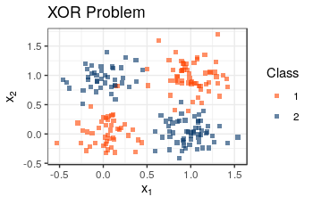
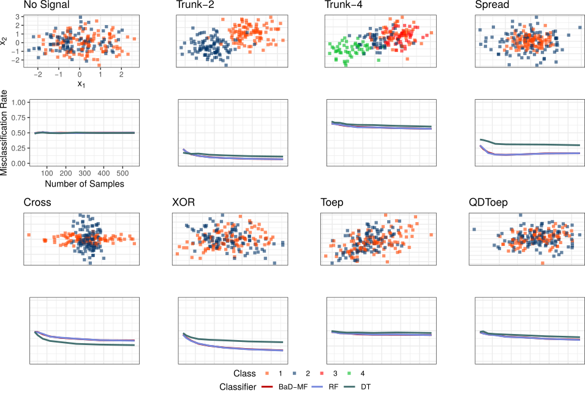

BaD-MF
Bayesian Decision-Making Forests
Presented by Eric Bridgeford
Follow the slides: ericwb.me/lectures/badmf/bayesian_final.html
What we will cover
- Problem Setup
- Introduction to Decision Trees
- Introduction to Random Forests
- BaD-MF
- Evaluation
Problem Setup
Nonparametric Supervised Learning
- Given $\mathcal D = (X_i, Y_i)_{i = 1}^n$
- $Y_i \in \{1, ..., K\}, X_i \in \mathbb{R}^p$
- Goal: characterize $Y_i | X_i$
- Constraint: Avoid distributional assumptions about $Y_i | X_i$
Decision Trees
What is a Decision Tree?
- A decision tree is a set of rules and actions
- Intuitive: Natural approach to problem solving

- We're grad students; of course we don't have 25 dollars

What Did we Just Do?
- Goal: Deciding how to eat
- Nodes: Propose a question
- Construct a "split": Do I continue along the tree to the left, or the right?
- Leaves: Decisions
- I'm hungry, and I don't have $25, so I buy a hamburger
Extending Decision Trees to Continuous Data
Making a Split
- Check $d_j = 1, ..., p$, trying $\tau_{ij} = (X_{ij})_i$
- Find the split $(d^*_{(1)}, \tau^*_{(1)})$ that minimizes the class impurity
Obtaining a Decision Rule
- Keep pushing the splits down, until we reach a maximum depth, or there are no more samples
- The resulting partitions/splits form the "decision rule"
From Trees to Forests
How can we Augment the Decision Tree?
- Clear that the Decision Tree Approach is a powerful foundation
- Many classes of supervised learning algorithms can't handle the XOR Problem
- We are often concerned with the $p \gg 1$ case
- Decision Trees tend to overfit
- How can we leverage the power of the decision tree, but improve generalizability?
Planting a Forest
- Bootstrap AGGregating (bagging): Given $n$ points, sample $n'_k$ uniformly with replacement for $k = 1, ..., m$
- Train $m$ decision trees on the bootstrapped samples
- Instead of trying all features, try $d \ll p$ of them
Majority Rules
- $\hat y(x) = \textrm{argmax}_{p}\sum_{i = 1}^k\mathbb{I}\{p_k(x) = p\}$
Example Forest Prediction

From Forests to... BaD-MFs
Missing what Matters Most
- Each decision tree sees only a (often small) subset of the data
- Each split node only attempts $d \ll p$ feature splits to avoid overfitting
- Intuitively, we would want the impactful features to be the ones we split based on
Idea: Leverage Bayesian Techniques
- Assume: let $n_j$ be the total number of times feature $j$ used as a split criterion
- $N = (n_j)_{j=1}^p \sim \textrm{Multinom}\left(\pi_1, ..., \pi_p\right)$
- Put a prior on the feature probabilities: $\pi_j \sim \textrm{Dir}\left(\alpha_1, ..., \alpha_p\right)$
Learning the Optimal Features
- What we've done so far allows us to convey information we know ahead of time to our classifer
- How do we allow the data to speak for itself?
- Dirichlet Posterior: $\pi_1', ..., \pi_p' | N \sim \textrm{Dir}\left(\alpha_1 + n_1 , ..., \alpha_p + n_p\right)$
Putting it all Together
Given $(\alpha, \mathcal D)$:- Train a Random Forest, with features attempted at split nodes sampled with probability $\pi \sim \textrm{Dir}\left(\alpha\right)$
- Update $\alpha' = \alpha + N = (\alpha_j + n_j)_{j = 1}^p$
- Train a second Forest, with features attempted at split nodes sampled with probability $\pi' \sim\textrm{Dir}\left(\alpha'\right)$
Performance
Forest Stability
- How interpretable are the forests we are learning?
Benchmark Problems
- How well does the classifier do under various finite sample scenarios?
- Metric: Misclassification rate
- $\hat{L} = \mathbb{P}_n \mathbb{I}\{\hat y_i(x) \neq y_i\} \equiv \frac{1}{n}\sum_i\mathbb{I}\{\hat y_i(x) \neq y_i\}$
Benchmark Performance
Future Work
Future work
- All of the coding was done in 2 days
- Did not have time to explore the simulations in very much depth
- Did not get a chance to revise the simulations after my first run
- Explore the $d \ll p$ case much more
- How can forest stability be quantified? Dissimilarity implications?